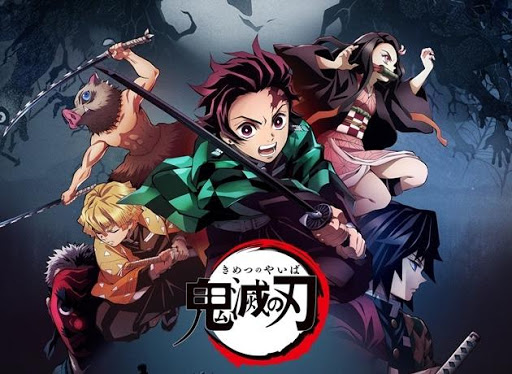
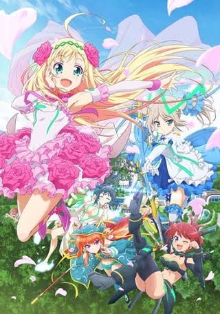
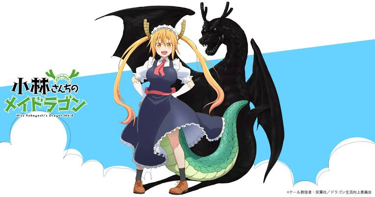

私が一番好きなアニメは鬼滅の刃です。大まかなストーリーは「時は大正、日本。炭を売る心優しき少年・炭治郎は、ある日鬼に皆殺しにされてしまう。さらに唯一生き残った妹の禰豆子は鬼に変貌してしまった。絶望的な現実に打ちのめされる炭治郎だったが、妹を人間に戻し、家族を殺した鬼を討つため、”鬼狩り”の道を進む決意をする。人と鬼が織りなす哀しき兄妹の物語が、今、始まるー！」です。

私が次に好きなアニメは「ひなろじ ～from Luck & Logic～」です。このアニメの大まかなストーリーは「桜が散り始めた春の日。天真爛漫な小国のお姫様・リオンはホッカイドウの学校に通うことに。そこは世界の平和を守る定理者(ロジカリスト)を育成するため、ALCAが運営する特別な教育機関。リオンが入った１年Sクラスには、定理者(ロジカリスト)のニーナをはじめ、個性的なクラスメイトたちがたくさん。定理者(ロジカリスト)のヒナたちが送る。とってもにぎやかでかわいらしい日々ー合体！！はじめます」です。

このアニメは京都アニメーションで作成されたとても面白いアニメです。あらすじは「独り身お疲れOLの小林さん。そんな彼女の家に訪ねてきたのは、なんとドラゴンだった！？茫然とする小林さんの目の前でドラゴンはメイド服を着た美少女へと変身する。どうやら昨夜、自分で誘ったらしいが、泥酔して全く覚えていない小林さん。「メイドとして働かせてください！」角に尻尾にメイドなドラゴン娘・トールとのポンコツでハチャメチャな新生活が始まる！」です。